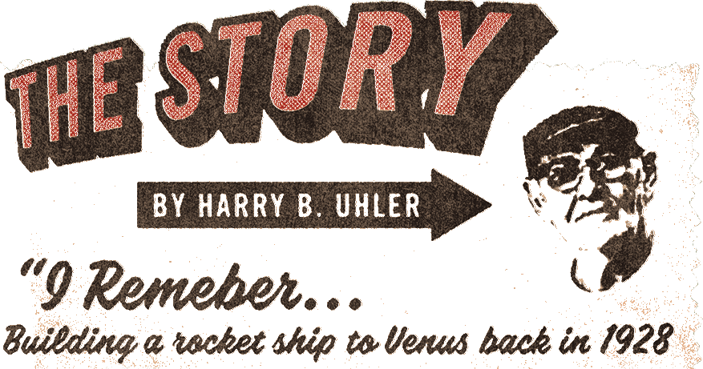
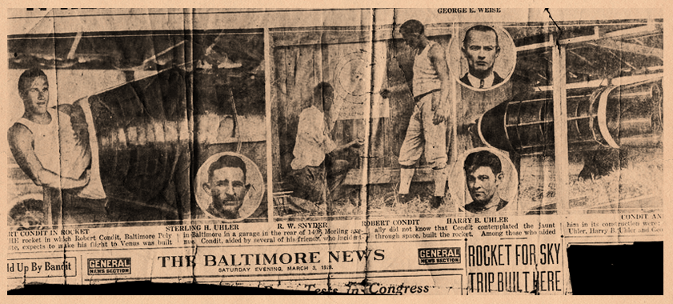

Three amateur scientists-my brother Sterling, Robert Condit and I fired a rocket on an August day in Baltimore in 1928. Our launch pad was a sidewalk on a Morling avenue. Our spacecraft was a 24-foot, bullet-shaped rocket made out of angle iron and sailcloth, with 50 gallons of gasoline for fuel and eight steel pipes for rocket tubes.

We weren't kids. I was in my early 30's and married, making $50 dollars a week as a carpenter. The youngest member of the trio was Robert Condit, not long out of Poly, and he was a mathematical wizard.
Our feelings were typical of the times. Only the year before, Charles A. Lindbergh had flown alone across the Atlantic. Like all other Americans, we were as proud of him then as we are today of the astronauts who walked on the moon. If a man like Lindbergh had the courage to lead the way at the risk of his life, we thought, other men should have the courage to follow.
Across the street from my home on Morling avenue, Ed Wise let us set up shop in his empty two-car garage. We paid for machinery and materials as we could afford to, out of our hard earned salaries, and we put close to $5,000 into the project before we were through. We knew where we wanted to go. Venus. Mars was too far, and we figured the moon was a burned out planet and not worth seeing.
The spacecraft framework was made out of angle iron ribs, bolted into shape. Over this we stretched several layers of sailcloth, and we impregnated it with a varnish that hardened to form an airtight shell as brittle as glass. The nose section unscrewed, and that's the way a man had to get in and out. There was room in there for only one man, and Condit was the man. We knew about living in the vacuum of space. Inside the ship there was a big tank of oxygen, and Condit planned to turn the valve on it and let out enough to breathe as he needed it. We knew we'd have to work out a supply of concentrated food tablets, because Condit sure wasn't going to have time to do any cooking. And water. Kegs or tanks of it would take up too much room, so we lined the whole ship interior with 1.5" pipes. That provided a storage place for water, and also gave the ship a layer of insulation.
Then we threw in a couple flashlights and a first aid kit, and that was it. There were two glass portholes, so Condit could look around during the ride. There wasn't any way to steer the ship. We figured to hit Venus by taking careful aim at blast-off. In the nose cone was a 25-foot silk parachute Condit could push out to let the ship down easy when he entered the gravity pull of Venus.
Inside the ship was an air compressor run by a gasoline motor. The compressor sprayed vaporized gasoline into the eight steel pipes that were our rocket tubes. A sparkplug in each tube, attached to a battery in the ship, kept the vapor burning.
We estimated that if we could get the ship off the ground, and traveling at 25,000 miles an hour, it would pull out of the earth's gravity about 40 miles up and coast right on over to Venus.
People came from all over town to see our ship, which we kept hanging from the garage roof, and to see us. Practically everyone thought we were crazy. My wife did, too. Wherever we went, people would recognize us, yell "Swooooosh!" and point to the sky.
There were details we hadn't quite worked out. Was there water to drink and food to eat on Venus? We figured Condit would find that out when he got there, and come right back if there wasn't any. How to take off and get back home again? Something else for Condit to figure out for himself. We didn't bother setting up any sort of a radio hook-up, figuring that Condit would tell us all about it when he got back.
It took us eight months to build the ship, and there were details that could have stood improvement, but we didn't want to wait any longer. We loaded up the pipes with water and the fuel tanks with gasoline. We moved the ship outside the garage and set her up on the sidewalk.
Condit crawled in, screwed the nose cone back tight, started up the compressor motor, and threw the switch